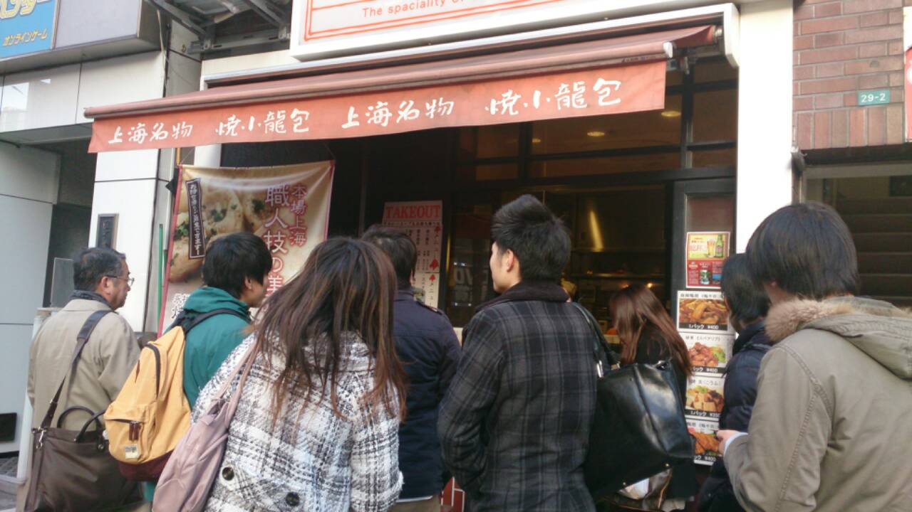
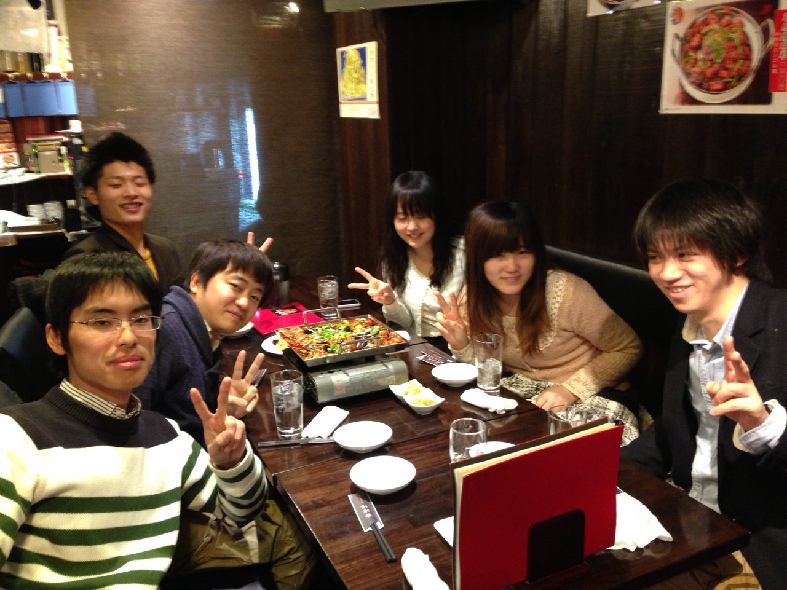

REPORT
JCSN 第一回中華街の旅＠池袋まず行った中国の物品を扱うスーパーマケット
その後、焼き小龍包を食べ、中国の書籍を扱う本に行きました。中国で売れている本の他、中国語を中国語で勉強する教材や音楽のＣＤや映画のＤＶＤ、さらに中国の政治についての中国本土での禁書等があり、興味をそそられました。
その後、晩ご飯では四川料理を食べに行きました。魚を丸ごと一匹使った辛い料理や、京酱肉丝などを美味しくいただき、中国人留学生の中国での生活、生い立ちなどをゆっくり聞くことができ、とても面白かったです。
焼き小龍包店の前にて

【概要】
・日時 3月6日（金） １5：００～１9：００
・場所 池袋北口付近
・タイムテーブル
15：00 集合
16：30 焼き小籠包を購入して食べる